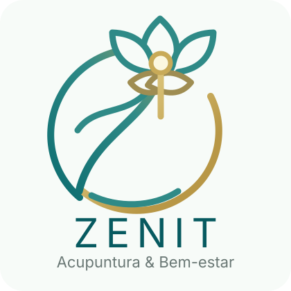

Equilíbrio
Harmonia entre corpo e mente como estado fundamental de saúde.

ZENIT Acupuntura & Bem-estar Agendar ConsultaAcupuntura Premium · Saúde Integrativa
Acupuntura de alta performance para quem busca saúde, vitalidade e clareza mental.
A Zenit
A Zenit nasce para quem vive no limite da rotina e precisa recuperar presença, foco e energia. Aqui, a acupuntura não é apresentada como um procedimento isolado, mas como uma experiência de retomada do estado máximo de saúde.
Unimos acolhimento holístico à precisão técnica: escuta atenta, ambiente silencioso e aplicação rigorosa para apoiar profissionais urbanos, atletas e pessoas com dores crónicas que preferem métodos naturais.
Harmonia entre corpo e mente como estado fundamental de saúde.
Rigor técnico na aplicação milenar da acupuntura para resultados eficazes.
Ambiente de segurança e silêncio, pensado como pausa da rotina externa.
Educação corporal para sustentar o bem-estar além da sessão.
Tratamentos
Tratamento de dor lombar, cervical, muscular e articular com abordagem natural e acompanhamento consistente.
Sessões para reduzir stress, tensão emocional e sobrecarga mental em rotinas urbanas exigentes.
Recuperação, energia e clareza para atletas e pessoas que querem funcionar no seu melhor nível.
Estímulo natural da vitalidade da pele, relaxamento facial e bem-estar estético sem perder a visão integral.
Prova social
“Cheguei com dor cervical constante e uma rotina mentalmente exaustiva. Em poucas sessões, senti mais leveza, foco e confiança no meu corpo.”
Mariana S. Gestora de projeto“Uso a acupuntura como parte da recuperação dos treinos. A abordagem da Zenit é precisa, tranquila e muito profissional.”
Rafael M. Atleta amador“O ambiente parece um refúgio. Além da técnica, recebi orientação para entender melhor os sinais do meu corpo.”
Cláudia P. Profissional liberalContato
Preencha o formulário ou fale diretamente por WhatsApp. Substitua os dados provisórios abaixo pelo telefone, email e morada reais da clínica antes de publicar.
Localização
Morada: substituir pela morada real da clínica.
Horário: segunda a sexta, 09h às 19h, mediante marcação.
Abrir no Google Maps